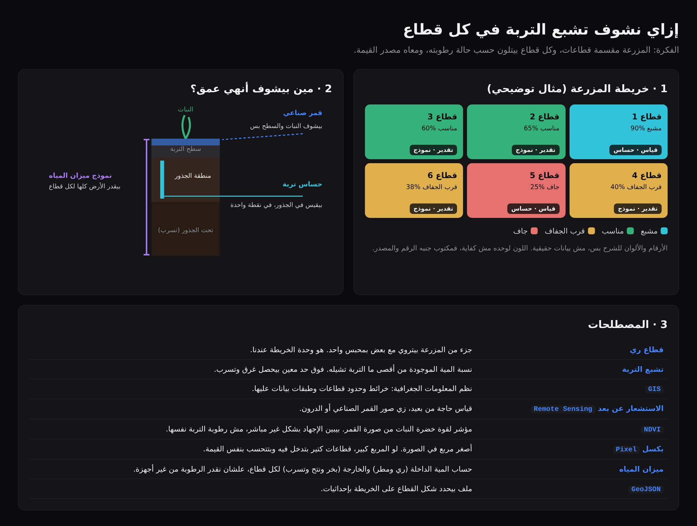
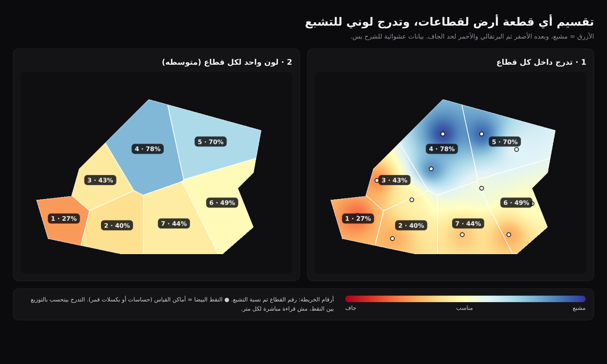
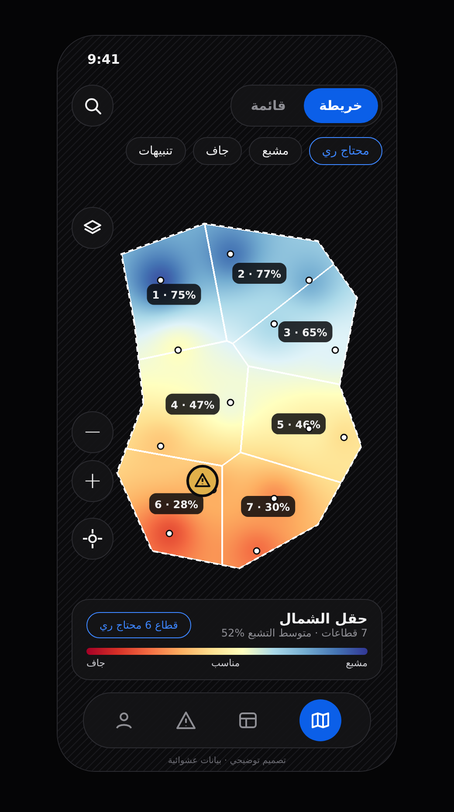

خرايط التشبع توضيحي
إزاي المنصة بتقسم الأرض لقطاعات وتلوّنها حسب تشبع التربة. كل الأرقام في الصور عشوائية للشرح.
1الفكرة والمصطلحاتمين بيشوف أنهي عمق من التربة، ومعنى كل مصطلح
- القمر الصناعي بيشوف النبات والسطح بس، مش رطوبة الجذور.
- حساس التربة بيقيس في منطقة الجذور، بس في نقطة واحدة.
- نموذج ميزان المياه بيقدر التربة كلها لكل قطاع، من غير أجهزة.

2تقسيم الأرض والتدرج اللونيلون واحد لكل قطاع، أو تدرج جوه القطاع
- أي شكل أرض يتقسم قطاعات، وحدودها تتحفظ كملف
GeoJSON. - الأزرق مشبع، وبعده الأصفر، ثم البرتقالي والأحمر لحد الجاف.
- لون واحد لكل قطاع هو الأساس، لأن النموذج بيدي قيمة واحدة للقطاع.
- التدرج جوه القطاع محتاج نقط قياس كتير، من حساسات أو بكسلات قمر صناعي. اللون بين النقط بيتحسب بطريقة
IDW، يعني الوزن بعكس المسافة.

3شاشة الحقل في التطبيقحقل واحد كامل، والقطاعات جواه بتدرج التشبع
- الحقل حدوده منقطة، والقطاعات جواه بحدود بيضا.
- على كل قطاع رقمه ونسبة تشبعه، والقطاع الأجف عليه علامة تحذير.
- الكارت اللي تحت فيه ملخص الحقل والقطاع اللي محتاج ري.
